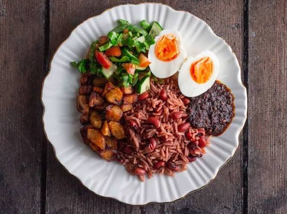

Waakye Recipe

Home
Waakye - The best rice and beans dish
Waakye (pronounced 'waachay') is a popular and hearty Ghanaian dish of cooked rice and beans, typically served for breakfast or lunch. The dish is distinguished by its unique reddish-brown color, which comes from boiling the rice and beans with dried sorghum leaves. A complete waakye meal is often a vibrant and customizable plate, served with a variety of toppings like savory stew, spicy black chili sauce known as shito, boiled eggs, fried plantains, spaghetti, and gari, which are toasted cassava flakes.
Ingredients
- 2 cups black-eyed peas or cow beans
- 3 cups jasmine or other long-grain white rice
- 4–5 dried sorghum leaves (also called waakye or millet leaves)
- 1 teaspoon baking soda (optional, helps deepen the red color)
- 2 tablespoons coconut oil (optional)
- Salt to taste
- Water
Steps
- Rinse the beans: Wash your black-eyed peas thoroughly under cold water
- Boil the beans with leaves: Place the beans in a large pot and add your washed sorghum leaves and a pinch of baking soda (if using). Add enough water to generously cover the beans.
- Partially cook: Bring the mixture to a boil, then reduce the heat to a simmer. Cook for about 30 to 40 minutes, until the beans are tender but still firm. You may need to top up the water if it evaporates.
- Remove the leaves: Once the water has taken on a rich maroon color, use tongs to remove and discard the sorghum leaves from the pot.
- Wash the rice: Rinse your white rice with water until the water runs almost clear. This removes excess starch.
- Combine and cook: Add the washed rice and salt to the pot with the beans and bean water. If using coconut oil, add it now for extra flavor and to prevent sticking. Add a little more water if necessary; the liquid should just cover the rice and beans.
- Cover and steam: Bring the mixture to a boil over medium heat, then reduce to very low heat. Cover the pot tightly with a lid, or use a piece of parchment paper under the lid to seal in moisture.
- Cook until done: Let it cook for another 15–20 minutes, stirring occasionally to prevent sticking and ensure even cooking. The waakye is ready when the rice and beans are both tender and the liquid has been absorbed.
Serve
- Spoon the warm waakye into a dish.
- Top with your favorite sides, such as waakye stew, shito, spaghetti, and boiled egg.
- Serve immediately and enjoy.